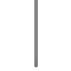

Aimer(エメ)、日本歌手、作詞家(aimerrhythm名義)。プロフィール非公開。所属レーベルはSME Records。
2011年9月7日、シングル「六等星の夜/悲しみはオーロラに/TWINKLE TWINKLE LITTLE STAR」を発表し、メジャーデビュー。
アーティスト名は、自身の長年の愛称である「エメ」に由来し[2]、フランス語で「愛する」「好む」を意味する動詞である。
Black Bird/Tiny Dancers/思い出は奇麗で
2018.09.05
Ref:rain/眩いばかり
2018.02.21
BEST SELECTION "blanc" + "noir"
2017.05.03
daydream
2016.09.21
9月5日発売Aimerの15枚目シングル収録
映画『累-かさね-』主題歌「Black Bird」
2018年1月より放送のTVアニメ「恋は雨上がりのように」の
エンディング・テーマ「Ref:rain（読み：リフレイン）」